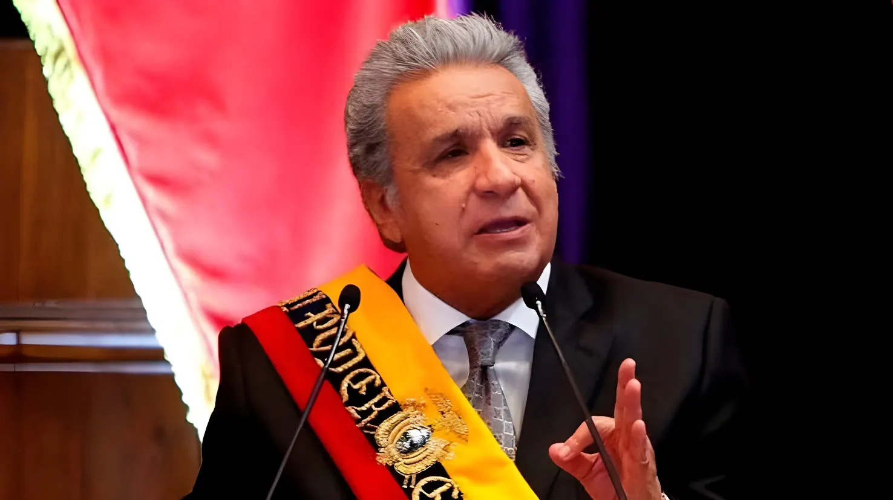

Vingt ans après le début des faits reprochés, la justice équatorienne a tranché : Lenín Moreno, président de la République de 2017 à 2021, a été reconnu coupable de cohecho (corruption) dans l'affaire Sinohydro, liée à la construction de la plus grande centrale hydroélectrique du pays. Une décision retentissante qui vient allonger la liste déjà longue des anciens dirigeants équatoriens rattrapés par la justice.
Au cœur du dossier se trouve la centrale hydroélectrique de Coca Codo Sinclair, la plus puissante d'Équateur avec 1 500 mégawatts installés, construite entre 2010 et 2016 par l'entreprise publique chinoise Sinohydro pour un montant d'environ 1,979 milliard de dollars, financé à hauteur de 1,68 milliard par l'Export-Import Bank of China. Dès sa mise en service, l'ouvrage a été marqué par de graves défauts de construction : plus de 17 000 fissures ont été recensées dans sa structure, ainsi qu'un phénomène d'érosion du lit du fleuve Coca menaçant sa stabilité.
Selon le parquet équatorien, ces malfaçons ne seraient pas les seuls problèmes du projet. Entre 2009 et 2018, un système présumé de corruption aurait permis à Sinohydro de verser environ 76,1 millions de dollars de pots-de-vin — près de 4 % de la valeur du contrat — afin de s'assurer l'attribution des travaux et de leur financement. Les fonds auraient transité par des montages financiers passant par le Panama, la Suisse, l'Espagne, Belize, la Chine et les États-Unis, sous couvert de faux contrats de conseil et de représentation commerciale.
Moreno n'est pas seul sur le banc des accusés. Son épouse, Rocío González, et sa fille Irina Moreno ont été condamnées à trente mois de prison pour complicité, tandis que deux de ses frères et une belle-sœur écopent également de peines pour avoir, selon l'accusation, reçu et dissimulé une partie des fonds. Au total, sur les vingt-et-une personnes poursuivies dans le dossier — dont l'homme d'affaires équatorien Conto Patiño, présenté comme la cheville ouvrière du circuit financier, ainsi qu'un ancien ambassadeur chinois à Quito et deux ex-représentants de Sinohydro — vingt ont été déclarées coupables.
Revenu spécialement d'exil pour se présenter devant ses juges, l'ancien président a choisi de rester en Équateur après le verdict plutôt que de repartir vers le Paraguay, où il résidait depuis plusieurs années en exerçant notamment les fonctions de commissaire de l'Organisation des États américains (OEA) pour les droits des personnes handicapées. Se déplaçant en fauteuil roulant depuis une agression armée en 1998, il pourrait bénéficier d'un régime d'assignation à résidence prévu par le droit équatorien pour les personnes en situation de handicap.
Construction de la centrale Coca Codo Sinclair par Sinohydro ; premiers défauts structurels constatés dès la mise en service fin 2016.
Présidence de Lenín Moreno, qui affirme avoir lui-même lancé des enquêtes sur les chantiers hérités du correísme, dont Coca Codo Sinclair.
Ouverture formelle de l'enquête pénale sur le volet Moreno de l'affaire, initialement connue sous le nom d'« INA Papers ».
Un juge équatorien autorise la mise en accusation de Lenín Moreno pour cohecho dans le dossier Sinohydro.
Tenue du procès à la Cour nationale de justice à Quito : auditions, expertises financières, comparution de l'ancien vice-président Jorge Glas comme témoin.
Le tribunal déclare Lenín Moreno coupable de cohecho et le condamne à cinq ans de prison, assortis d'une interdiction perpétuelle d'exercer une fonction publique.
Le parquet équatorien avait requis six ans et demi de prison à l'encontre de Lenín Moreno. Le tribunal, composé des juges Manuel Cabrera, Daniella Camacho et Julio Inga, a finalement retenu une peine de cinq ans, assortie d'une interdiction définitive d'exercer toute fonction publique. Au-delà de la peine de prison, la décision impose une réparation intégrale — mécanisme du droit équatorien combinant remboursement, excuses publiques et mesures symboliques — dont le montant cumulé pour l'ensemble des condamnés dépasse 163 millions de dollars. Moreno et sa famille devraient rembourser jusqu'à trois fois les sommes qu'ils auraient perçues.
| Prévenu | Rôle allégué | Peine |
|---|---|---|
| Lenín Moreno | Ex-président, auteur direct | 5 ans |
| Rocío González | Épouse, complicité | 30 mois |
| Irina Moreno | Fille, complicité | 30 mois |
| Conto Patiño | Homme d'affaires, auteur direct | 5 ans |
| Cai Runguo | Ex-ambassadeur de Chine, auteur direct | 5 ans |
Face aux juges, Lenín Moreno a construit sa défense autour d'une thèse politique : le procès serait, selon lui, une manœuvre de représailles orchestrée par son ancien mentor devenu rival, Rafael Correa, dont il fut le vice-président de 2007 à 2013 avant de rompre avec lui une fois élu président. Moreno rappelle que c'est Correa qui a signé l'accord intergouvernemental avec la Chine, et que la supervision opérationnelle du chantier revenait à l'époque à Jorge Glas, vice-président de Correa puis de Moreno lui-même, déjà emprisonné pour d'autres affaires de corruption liées au scandale Odebrecht.
« Je n'ai pas reçu un seul centime de la part de Sinohydro. »
— Lenín Moreno, à sa sortie d'audience, 28 août 2026« Celui qui a signé le contrat, c'est Rafael Correa. »
— Lenín Moreno, réagissant à sa condamnationCette condamnation s'inscrit dans une longue série de procédures judiciaires visant d'anciens hauts responsables équatoriens. Rafael Correa lui-même a été condamné par contumace en 2020 à huit ans de prison pour corruption et vit en exil en Belgique depuis la fin de son mandat. Jorge Glas, son ex-vice-président, purge actuellement une peine de prison distincte. La condamnation de Moreno confirme ainsi qu'aucun camp politique équatorien — ni le correísme, ni ses opposants — n'échappe totalement à l'examen des tribunaux dans une décennie marquée par les révélations sur les grands contrats publics passés avec des entreprises étrangères.
L'affaire Sinohydro dépasse la seule trajectoire personnelle de Lenín Moreno : elle interroge le modèle de financement des infrastructures équatoriennes par des prêts et des entreprises chinoises, qui a laissé le pays à la fois endetté envers Pékin et confronté à des ouvrages fragiles. Que la condamnation soit confirmée ou infirmée en appel, elle rappelle qu'en Équateur, l'alternance politique s'est accompagnée, depuis plusieurs années, d'une mise en cause systématique des dirigeants sortants — signe d'une justice qui affirme son indépendance, mais aussi d'une vie politique où la reddition de comptes reste indissociable des rivalités entre anciens alliés devenus adversaires.
Veinte años después del inicio de los hechos investigados, la justicia ecuatoriana ha fallado: Lenín Moreno, presidente de la República entre 2017 y 2021, fue declarado culpable de cohecho en el caso Sinohydro, vinculado a la construcción de la mayor central hidroeléctrica del país. Una decisión de gran impacto que se suma a la ya larga lista de exdirigentes ecuatorianos alcanzados por la justicia.
En el centro del caso se encuentra la central hidroeléctrica de Coca Codo Sinclair, la más grande de Ecuador con 1.500 megavatios instalados, construida entre 2010 y 2016 por la empresa estatal china Sinohydro por unos 1.979 millones de dólares, financiada en 1.680 millones por el Export-Import Bank de China. Desde su puesta en marcha, la obra presentó graves defectos: se contabilizaron más de 17.000 fisuras en su estructura, además de un fenómeno de erosión del lecho del río Coca que amenaza su estabilidad.
Según la Fiscalía ecuatoriana, estas fallas no serían el único problema del proyecto. Entre 2009 y 2018, una presunta red de corrupción habría permitido a Sinohydro pagar cerca de 76,1 millones de dólares en sobornos —casi el 4 % del valor del contrato— para asegurarse la adjudicación de la obra y su financiamiento. Los fondos habrían circulado mediante estructuras financieras en Panamá, Suiza, España, Belice, China y Estados Unidos, bajo la apariencia de falsos contratos de consultoría y representación comercial.
Moreno no está solo en el banquillo. Su esposa, Rocío González, y su hija Irina Moreno, fueron condenadas a treinta meses de prisión por complicidad, mientras que dos de sus hermanos y una cuñada también recibieron penas por, según la acusación, haber recibido y ocultado parte de los fondos. En total, de las veintiuna personas procesadas en la causa —entre ellas el empresario ecuatoriano Conto Patiño, señalado como pieza clave del entramado financiero, además de un exembajador chino en Quito y dos exrepresentantes de Sinohydro— veinte fueron declaradas culpables.
Tras regresar especialmente del exilio para comparecer ante sus jueces, el expresidente decidió permanecer en Ecuador tras el veredicto en lugar de volver a Paraguay, país donde residía desde hace varios años y donde ejercía como comisionado de la Organización de los Estados Americanos (OEA) para los derechos de las personas con discapacidad. Al desplazarse en silla de ruedas desde que sufrió un asalto armado en 1998, podría acogerse al régimen de prisión domiciliaria previsto por la ley ecuatoriana para personas con discapacidad.
Construcción de la central Coca Codo Sinclair por Sinohydro; se detectan los primeros defectos estructurales tras su entrada en operación a fines de 2016.
Presidencia de Lenín Moreno, quien asegura haber ordenado investigar las obras heredadas del correísmo, entre ellas Coca Codo Sinclair.
Apertura formal de la investigación penal sobre el rol de Moreno en el caso, inicialmente conocido como «Ina Papers».
Un juez ecuatoriano autoriza el enjuiciamiento de Lenín Moreno por cohecho en el caso Sinohydro.
Desarrollo del juicio en la Corte Nacional de Justicia en Quito: audiencias, peritajes financieros, comparecencia del exvicepresidente Jorge Glas como testigo.
El tribunal declara a Lenín Moreno culpable de cohecho y lo condena a cinco años de prisión, con inhabilitación perpetua para ejercer cargos públicos.
La Fiscalía ecuatoriana había solicitado seis años y medio de prisión para Lenín Moreno. El tribunal, integrado por los jueces Manuel Cabrera, Daniella Camacho y Julio Inga, finalmente impuso una pena de cinco años, junto con una inhabilitación perpetua para ejercer cualquier cargo público. Además de la pena de cárcel, la sentencia ordena una reparación integral —mecanismo del derecho ecuatoriano que combina restitución, disculpas públicas y medidas simbólicas— cuyo monto acumulado para el conjunto de los condenados supera los 163 millones de dólares. Moreno y su familia deberían restituir hasta el triple de las sumas que habrían percibido.
| Procesado | Rol atribuido | Pena |
|---|---|---|
| Lenín Moreno | Expresidente, autor directo | 5 años |
| Rocío González | Esposa, complicidad | 30 meses |
| Irina Moreno | Hija, complicidad | 30 meses |
| Conto Patiño | Empresario, autor directo | 5 años |
| Cai Runguo | Exembajador de China, autor directo | 5 años |
Ante los jueces, Lenín Moreno construyó su defensa en torno a una tesis política: el juicio sería, según él, una maniobra de venganza orquestada por su antiguo mentor convertido en rival, Rafael Correa, de quien fue vicepresidente entre 2007 y 2013 antes de romper con él tras ser elegido presidente. Moreno recuerda que fue Correa quien firmó el acuerdo intergubernamental con China, y que la supervisión operativa de la obra correspondía entonces a Jorge Glas, vicepresidente de Correa y luego del propio Moreno, ya encarcelado por otros casos de corrupción vinculados al escándalo Odebrecht.
« No he recibido un solo centavo por parte de Sinohydro. »
— Lenín Moreno, a la salida de la audiencia, 28 de agosto de 2026« El que firmó el contrato es Rafael Correa. »
— Lenín Moreno, tras conocer su condenaEsta condena se inscribe en una larga serie de procesos judiciales contra exaltos funcionarios ecuatorianos. El propio Rafael Correa fue condenado en ausencia en 2020 a ocho años de prisión por corrupción y vive exiliado en Bélgica desde el fin de su mandato. Jorge Glas, su exvicepresidente, cumple actualmente una condena distinta. La sentencia contra Moreno confirma así que ningún sector político ecuatoriano —ni el correísmo ni sus opositores— escapa por completo al escrutinio judicial en una década marcada por revelaciones sobre los grandes contratos públicos firmados con empresas extranjeras.
El caso Sinohydro trasciende la trayectoria personal de Lenín Moreno: interpela el modelo de financiamiento de las infraestructuras ecuatorianas mediante préstamos y empresas chinas, que ha dejado al país endeudado con Pekín y enfrentado a obras frágiles. Sea confirmada o revocada en apelación, la condena recuerda que en Ecuador la alternancia política ha venido acompañada, desde hace varios años, de un cuestionamiento sistemático de los mandatarios salientes: señal de una justicia que reivindica su independencia, pero también de una vida política donde la rendición de cuentas sigue ligada a las rivalidades entre antiguos aliados convertidos en adversarios.